Tegels zetten
sinds 1960
Showroom, tegelzetters en voegwerk onder één dak, aan de Polluxweg in Leeuwarden.
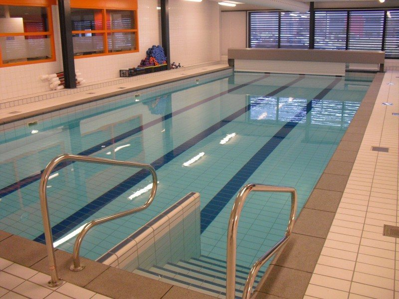
Zwembad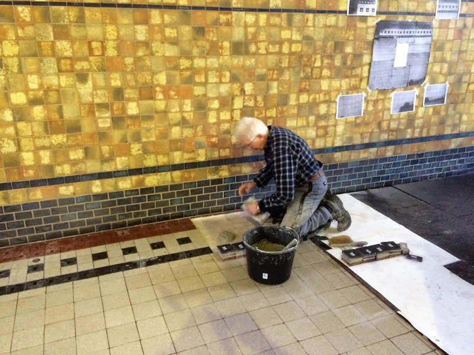
Woudagemaal, Lemmer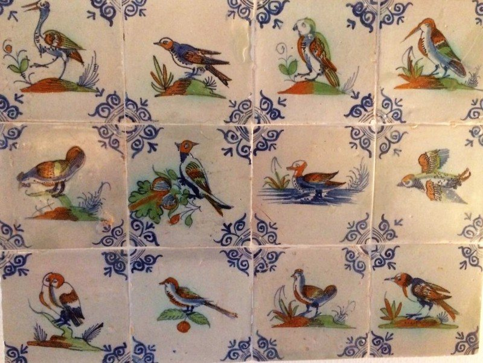
Antieke tegels, 17e en 18e eeuwEen complete badkamer, van leiding tot voeg
Voor een warme tegelvloer, een badkamer die samen met een installateur is ingericht, een betegelde keuken of een toilet: bij Van der Meulen komt het tegelwerk van één adres.
- Installatiewerk en stucwerk
- Tegelwerk, kitwerk en vloerverwarming
- Epoxyvoegen in douches, waterdicht en niet verkleurend
“Wij houden niet van grote voegen.” De tegels worden verwerkt met voegjes van 2 tot 3 millimeter.
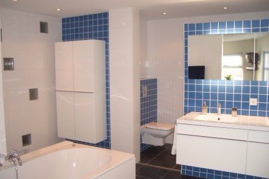
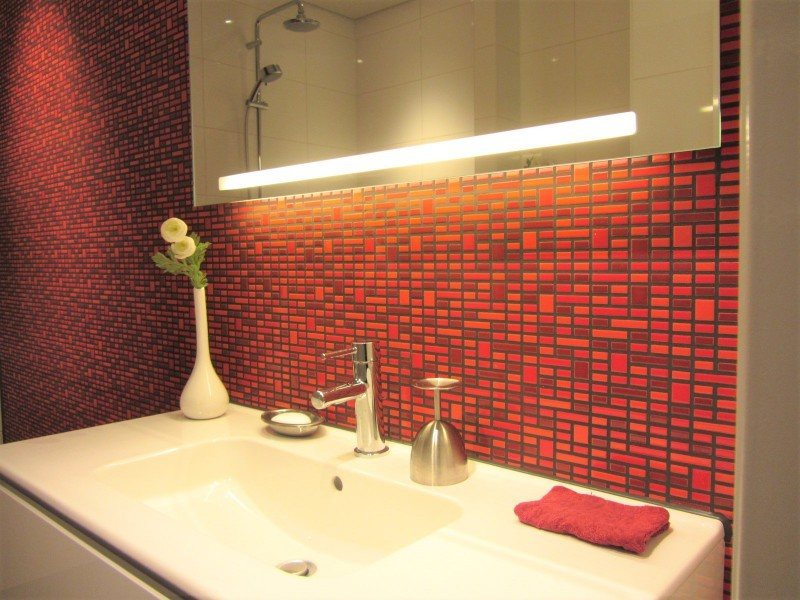
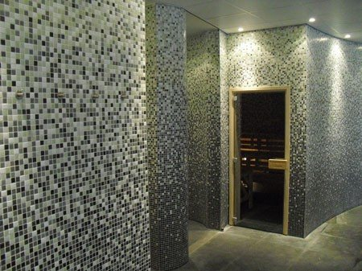
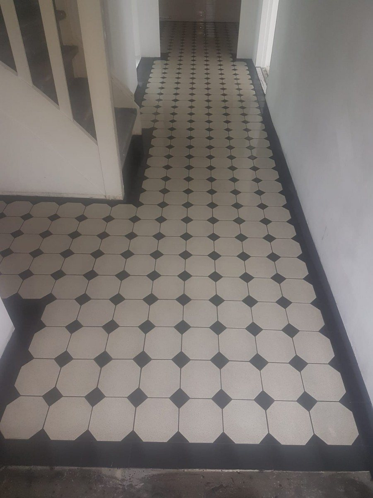
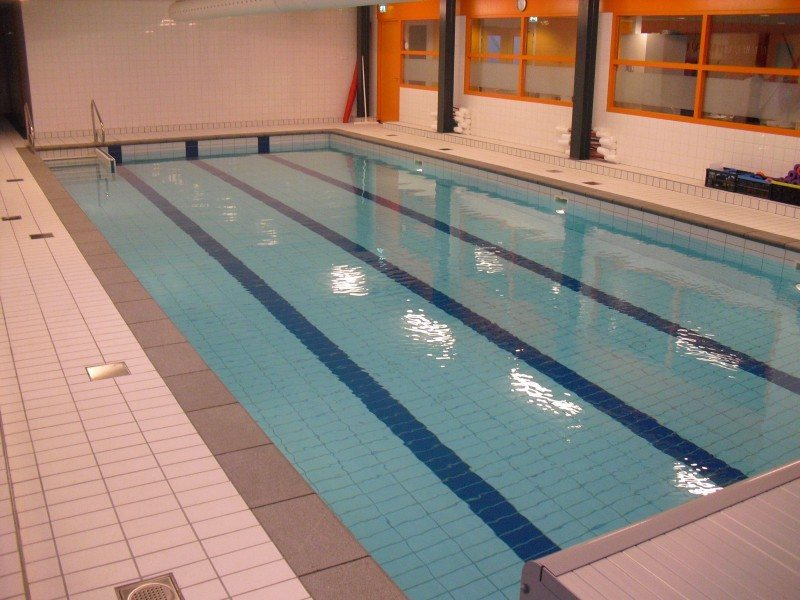
Een vloer van duizend vierkante meter of die van een toilet
Oud tegelwerk terug op zijn plek
In restauratiewerk en onderhoud van monumenten heeft het bedrijf jarenlange ervaring. Ook het verwerken van natuursteen en het leggen van luxe natuursteenvloeren is bekend terrein.
Ir. D.F. Woudagemaal, Lemmer
In fasen werden de vloeren hersteld. De losgeraakte tegels werden genummerd en elke tegel ging terug op zijn originele plaats.
Sint Nicolaaskerk, St. Nicolaasga
Door de tijd losgeraakte vloerdelen in dit rijksmonument uit 1887 zijn zorgvuldig gerestaureerd.
Monumentale woningen, Drachten
Restauratie van tegelwerk in opdracht van Monumenten Advies Noord.
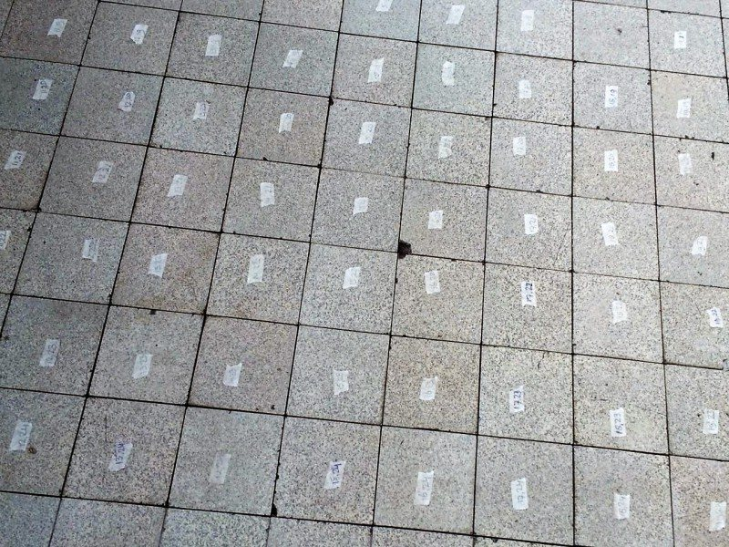
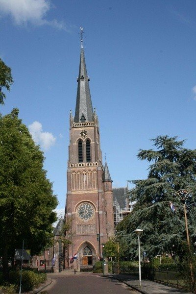
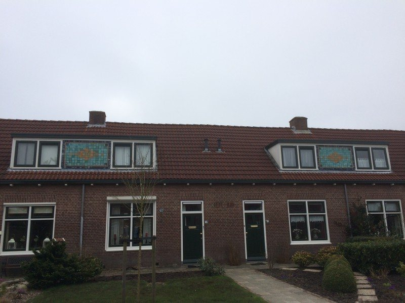
Kijk en voel voordat u kiest
In de showroom staan collecties van bekende merken. Het is soms lastig om u thuis voor te stellen hoe tegels er uit gaan zien, daarom adviseert het team graag en kunt u vaak tegels op zicht meenemen.
Polluxweg 18, 8938 AZ Leeuwarden
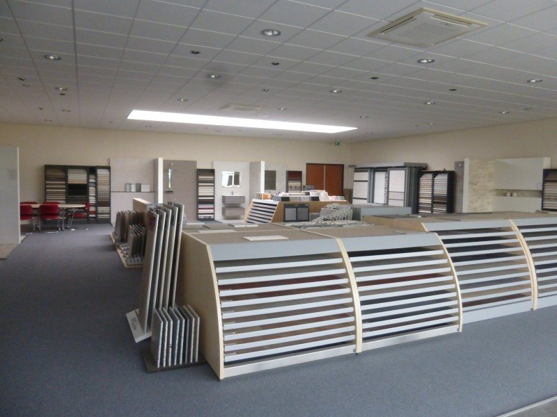
Van der Meulen is exclusief dealer van La Cueva: tegels met een Nederlands design, geïnspireerd op natuurlijke materialen. Hout, marmer, stone, beton en trendkleuren, de volledige collectie ligt in de showroom.
Begonnen uit liefde voor het vak
- 1960Uitvoerder Hein van der Meulen begint een eigen tegelzetbedrijf, omdat hij het zetten van tegels machtig mooi werk vond. Gemiddeld vijf medewerkers.“15 x 15 aan de wand en 10 x 10 op de vloer”
- 1979Een volgende generatie neemt het tegelbedrijf over en zet het voort.
- 1992Verhuizing naar industrieterrein De Hemrik in Leeuwarden-oost, met tegels en hulpmaterialen onder één dak.
- 2008Nieuwe locatie op De Hemrik, met meer ruimte en een bredere showroom.
- NuAcht medewerkers, aangevuld met ervaren zzp'ers.
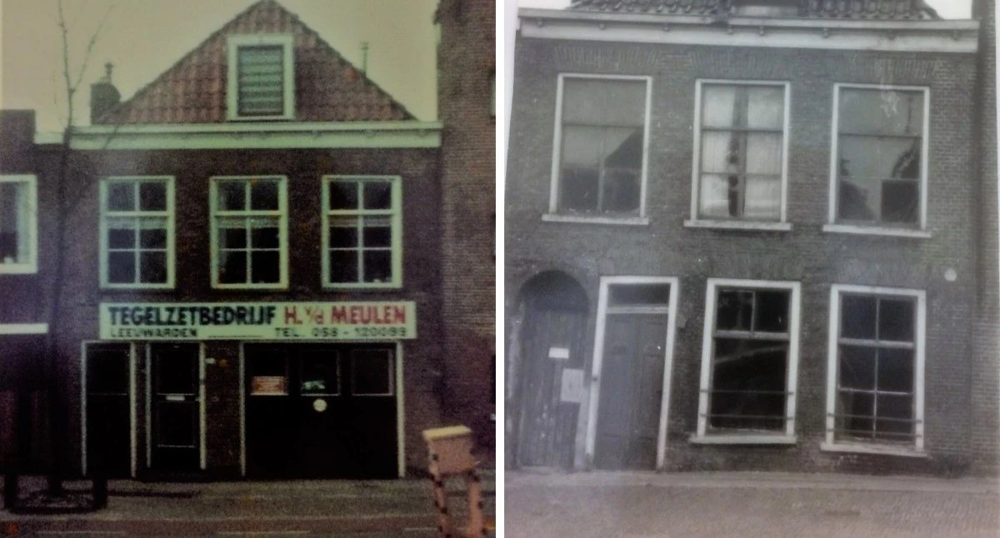
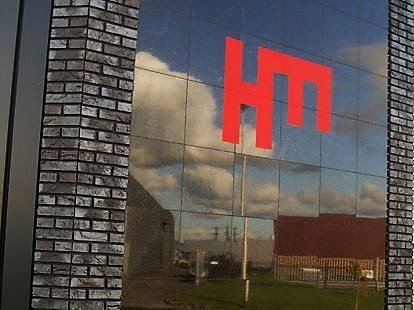
Polluxweg 18
8938 AZ Leeuwarden
Showroom: maandag t/m vrijdag 13:30 tot 17:00